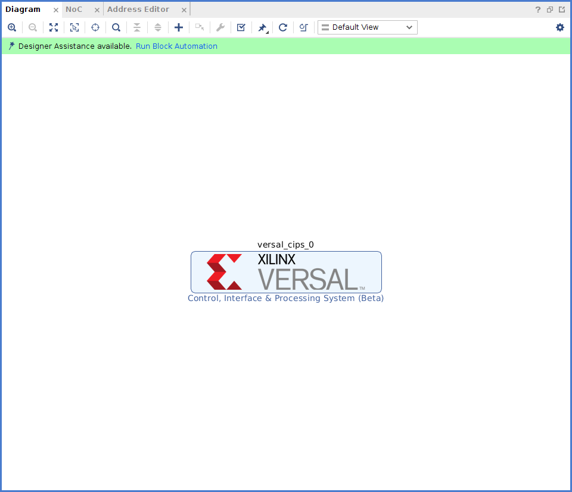

Versal ACAP CIPS および NoC (DDR) IP コアの設定¶
Versal® ACAP CIPS IP コアを使用すると、ブート モード、ペリフェラル、クロック、インターフェイス、割り込み、などのプロセッシング システムおよび PMC ブロックを設定できます。
この章では、次のタスクを実行する方法について説明します。
CIPS IP コアを設定して、Versal ACAP 用の Vivado ® プロジェクトを作成し、適切なブート デバイスとペリフェラルを選択します。
Arm® Cortex™-A72 のオンチップ メモリ (OCM) 上で Hello World ソフトウェア アプリケーションを作成して実行します。
Arm Cortex-R5F の TCM (Tightly-coupled-memory) 上で Hello World ソフトウェア アプリケーションを作成して実行します。
NoC IP コアは、 DDR メモリ、およびシステム内のプロセッシング エンジン (スカラー型エンジン、適応型エンジン、AI エンジン) を通るデータパスを設定します。
DDR をメモリとして使用して、Arm Cortex-A72 上で Hello World ソフトウェア アプリケーションを作成して実行します。
DDR をメモリとして使用して、Arm Cortex-R5F 上で Hello World ソフトウェア アプリケーションを作成して実行します。
前提条件¶
この章で説明する Hello World アプリケーションを作成して実行するには、Vitis™ 統合ソフトウェア プラットフォームをインストールします。インストールするには、『Vitis 統合ソフトウェア プラットフォームの資料: エンベデッド ソフトウェア開発』 (UG1400) を参照してください。
CIPS IP コアの設定¶
Versal ACAP システム デザインの作成には、適切なブート デバイスおよびペリフェラルを選択するように CIPS IP を設定する必要があります。まず、CIPS IP コアのペリフェラルと利用可能な MIO (Multiplexed I/O) の接続が要件を満たしていれば、PL コンポーネントは必要ありません。この章では、単純な CIPS IP コア ベースのデザインを作成する方法について説明します。
Versal ACAP を使用した新規エンベデッド プロジェクトの作成¶
この例では、Vivado Design Suite を起動し、エンベデッド プロセッシング システムのプロジェクトを最上位として作成します。
デザインの開始¶
Vivado Design Suite を起動します。
オプション: この手順は、ES1 ボードを使用している場合にのみ必要です。[Tcl Console] ウィンドウに次のコマンドを入力して、ES1 ボードをイネーブルにします。
enable_beta_deviceEnter キーを押します。
注記
~/.Xilinx/Vivado/Vivado_init.tclにあるenable_beta_device(Linux ホスト) も追加する必要があります。[Quick Start] セクションの [Create Project] をクリックし、New Project ウィザードを開きます。
ウィザードの各ページで次の表の情報に基づいて設定します。
表 1: システム プロパティ設定
ウィザード ページ
システム プロパティ
設定または使用するコマンド
Project Name
Project Name
edt_versal
Project Location
C:/edt
Create Project Subdirectory
オン
Project Type
作成するプロジェクトのタイプを指定(RTL または合成済み EDIF から開始可能)
RTL Project
[Do not specify sources at this time] チェック ボックス
オフのまま
[Project is an extensible Vitis platform] チェック ボックス
オフのまま
Add Sources
この画面では変更しない
Add Con straints
この画面では変更しない
Default Part
Select
Boards
Display Name
Versal VMK180/VCK190/VPK180 Evaluation Platform
Project Summary
Project Summary
プロジェクト サマリを確認
注記
SSI デバイス用のプロジェクトを作成する場合、[Display Name] に [VPK180 Evaluation platform] を選択します。
[Finish] をクリックします。New Project ウィザードが閉じ、作成したプロジェクトが Vivado デザイン ツールで開きます。
注記
ボードを選択する際は、バージョン番号を確認してください。ES1 シリコンの場合、ボードのバージョンは 1.3 です。量産シリコンの場合、ボードのバージョンは 2.2 です。ボード上のシリコンに基づいてバージョンを選択します。
エンベデッド プロセッサ プロジェクトの作成¶
エンベデッド プロセッサ プロジェクトを作成する手順は、次のとおりです。
Flow Navigator の [IP Integrator] → [Create Block Design] をクリックします。

[Create Block Design] ダイアログ ボックスが開きます。
[Create Block Design] ダイアログ ボックスで次のように選択します。
ウィザード画面
システム プロパティ
設定または使用するコマンド
Create Block Design
Design name
edt_versal
Directory
<Local to Project>Specify source set
Design Sources
[OK] をクリックします。
[Diagram] ウィンドウがこのデザインが空であることを示すメッセージと共に表示されます。まずは、IP カタログから IP を追加します。
[Add IP]
 をクリックします。
をクリックします。検索ボックスに「CIPS」と入力して、[Control, Interfaces and Processing System] を探します。
[Control, Interface & Processing System IP] をダブルクリックして、ブロック デザインに追加します。次の図に示すように、[Diagram] ウィンドウに CIPS IP コアが表示されます。

Vivado Design Suite での Versal ACAP CIPS IP コアの管理¶
Versal ACAP のプロセッサ システムをデザインに追加したので、オプションを設定します。
[Run Block Automation] をクリックします。
ブロック設定を次の図に示すように設定します。

[Diagram] ウィンドウで versal_cips_0 をダブルクリックします。
[Design Flow] および [Presets] のすべての設定が次の図のようになっていることを確認します。
ボード インターフェイスを [ps pmc fixed IO] から [Custom] に変更する必要がある場合があります。その際、[Apply Preset] ダイアログ ボックスが表示されたら、[Yes] をクリックします。
[Next] をクリックしてから [PS PMC] をクリックします。

次の図に示すように、[Peripherals] に移動してペリフェラルをイネーブルにします。
[IO] をクリックし、次のように I/O コンフィギュレーションを設定します。
注記
VCK190 プリセット値は、QSPI と SD をデフォルトのブート モードとして設定します。変更は必要ありません。
[Interrupts] をクリックし、次の図のように設定します。

[Finish] をクリックして CIPS の GUI を閉じます。
デザインの検証および出力の生成¶
デザインを検証し、出力ファイルを生成するには、次の手順に従います。
[Diagram] ウィンドウの空白部分を右クリックして、[Validate Design] をクリックします。または、F6 キーを押します。次の図のようなメッセージが表示されます。
検証が完了すると、次のようなメッセージ ダイアログ ボックスが開きます。

[Block Design] 環境の [Sources] ウィンドウをクリックします。
[Hierarchy] をクリックし、[Design Sources] を展開し、[edt_versal] を右クリックし、[Create HDL Wrapper] をクリックします。
[Create HDL Wrapper] ダイアログ ボックスが開きます。このダイアログ ボックスを使用して、プロセッサ サブシステム用の HDL ラッパー ファイルを作成します。
ヒント
HDL ラッパーは、デザイン ツールに必要な最上位エンティティです。
[Let Vivado manage wrapper and auto-update] をオンにし、[OK] をクリックします。
[Block Design] の [Sources] ウィンドウで、[Design Sources] の [edt_versal_wrapper] を展開します。
[edt_versal_i: edt_versal (edt_versal.bd)] という最上位ブロックを右クリックし、[Generate Output Products] をクリックします。
次に示す [Generate Output Products] ダイアログ ボックスが開きます。
注記
Windows コンピューターで Vivado® Design Suite を実行している場合は、[Run Settings] の下にさまざまなオプションが表示されることがあります。その場合は、デフォルト設定で続行します。
[Generate] をクリックします。
この手順では、選択したソースに必要なすべての出力ファイルを作成します。IP プロセッサ システムの制約を手動で作成する必要はありません。[Generate Output Products] をクリックすると、Vivado Design Suite でプロセッサ サブシステム用の XDC ファイルが自動的に生成されます。
[Block Design] の [Sources] ウィンドウで、[IP Sources] タブをクリックします。次の図に示すように、生成した出力ファイルが表示されます。
デバイス イメージの合成、インプリメント、生成¶
デザインのデバイス イメージを生成するには、次の手順を実行します。
Flow Navigator の [Program and Debug] をクリックし、[Generate Device Image] をクリックします。
[No Implementation Results Available] メニューが表示されます。[Yes] をクリックします。
[Launch Run] メニューが表示されます。[OK] をクリックします。
デバイス イメージの生成が完了すると、[Device Image Generation Completed] ダイアログ ボックスが開きます。
[Cancel] をクリックしてウィンドウを閉じます。
デバイス イメージを生成したら、ハードウェアをエクスポートします。
注記
次の手順はオプションなので、省略して「ハードウェアのエクスポート」 セクションに進むこともできます。これらの手順を実行すると、デバイス イメージを生成する前に合成およびインプリメンテーションを実行するので、デバイス イメージ生成の詳細なフローがわかるようになります。デバイス イメージを生成するフローを理解するには、次の手順を実行します。
Flow Navigator の [Synthesis] の [Run Synthesis] をクリックして、[OK] をクリックします。
合成の開始前にプロジェクトを保存するようメッセージが表示された場合は、[Save] をクリックします。
合成の実行中、ウィンドウの右上にステータス バーが表示されます。このステータス バーは、デザイン プロセスをとおして、さまざまな理由により表示されます。ステータス バーは、プロセスがバックグランドで実行されていることを示します。合成が完了すると、[Synthesis Completed] ダイアログ ボックスが開きます。
[Run Implementation] をクリックして [OK] をクリックします。
インプリメンテーションが完了すると、[Implementation Completed] ダイアログ ボックスが開きます。
[Generate Device Image] をクリックして [OK] をクリックします。
[Device Image Generation Completed] ダイアログ ボックスが開きます。
[Cancel] をクリックしてウィンドウを閉じます。
デバイス イメージを生成したら、ハードウェアをエクスポートします。
ハードウェアのエクスポート¶
[File] → [Export] → [Export Hardware] をクリックします。
[Export Hardware] ダイアログ ボックスが開きます。
[Include device image] を選択し、[Next] をクリックします。
エクスポートしたファイルの名前を入力し (またはデフォルトを使用し)、ディレクトリを選択します。[Next] をクリックします。
ハードウェア モジュールが既にエクスポートされている場合は、警告メッセージが表示されます。既存の XSA ファイルを上書きするかどうか尋ねるメッセージが表示されたら、[Yes] をクリックします。
[Finish] をクリックします。
ベアメタル Hello World アプリケーションの実行¶
この例では、Vitis ソフトウェア プラットフォームでのボード設定の管理、ケーブルの接続、システムからのボードへの接続、および OCM (オンチップ メモリ) 上の Arm Cortex-A72 および TCM (Tightly-coupled-memory) 上の Arm Cortex- R5F から Hello World ソフトウェア アプリケーションを実行する方法を説明します。
次の手順では、必要なケーブル接続をし、システムからボードを接続して、Vitis ソフトウェア プラットフォームを起動する方法を示します。
電源ケーブルをボードに接続します。
マイクロ USB ケーブルで Windows ホスト コンピューターとターゲット ボードの USB JTAG コネクタを接続します。このケーブルは、USB のシリアル転送に使用されます。
注記
次の図に示すように、SW1 スイッチが JTAG ブート モードに設定されていることを確認します。

次の図に示すように、電源スイッチを使用して VMK180/VCK190 ボードに電源を投入します。
注記
Vitis ソフトウェア プラットフォームが既に起動している場合は、手順 6 へ進みます。
[Tools] → [Launch Vitis IDE from Vivado] をクリックして Vitis ソフトウェア プラットフォームを起動し、ワークスペース パス (この例の場合は、
c:\edt\edt_vck190) を指定します。または、デフォルトのワークスペースを使用して Vitis ソフトウェア プラットフォームを開き、後で [File] → [Switch Workspace] をクリックして正しいワークスペースに切り替えることもできます。
システムに割り当てられている COM ポートのシリアル通信ユーティリティを開きます。Vitis ソフトウェア プラットフォームでは、チュートリアル全体で使用されるシリアル端末ユーティリティが提供されています。[Window] → [Show View] → [Xilinx] → [Vitis Serial Terminal] をクリックして開きます。

Vitis 端末のコンテキストで [Connect to a serial port] ボタンをクリックして、シリアル コンフィギュレーションを設定し、接続します。
Windows デバイス マネージャーでポートの詳細を検証します。
UART-0 ターミナルは、Interface-0 の COM ポートに対応します。この例では、UART-0 ターミナルがデフォルトで設定されているため、COM ポートに対して Interface-0 のポートを選択します。次の図に、Versal ACAP プロセッシング システム用の標準的な設定を示します。
注記
Tera Term や Putty などの外部端末のシリアル ポート コンソールを使用できます。関連する COM ポート情報は、[コントロール パネル] の [デバイス マネージャー] メニューから確認できます。
OCM 上の Arm Cortex-A72 用の Hello World アプリケーションの作成¶
次は、OCM 上の Arm Cortex-A72 から Hello World アプリケーションを作成する手順を説明します。
[File] → [New] → [Application Project] をクリックします。Creating a New Application Project ウィザードが開きます。Vitis IDE を初めて起動した場合は、次の図に示す Welcome 画面で [Create Application Project] を選択できます。
注記
オプションで、[Skip welcome page next time] チェック ボックスをオンにすると、毎回 Welcome ページが表示されないようにすることもできます。
次の情報に基づいて、ウィザードの各ページでオプションを設定します。
表 3: システム プロパティ設定
ウィザード画面
システム プロパティ
設定または使用するコマンド
プラットフォーム
Create a new platform from hardware (XSA)
[Browse] ボタンをクリックして XSA ファイルを追加
プラットフォーム名
vck190_platform
Application Project Details
Application project name
helloworld_a72
Select a system project
+Create New
System project name
helloworld_system
プロセッサ
versal_cips_0_pspmc_0_psv_cortexa72_0
ドメイン
Select a domain
+Create New
名前
デフォルト名入力済み
Display Name
デフォルト名入力済み
オペレーティング システム
スタンドアロン
プロセッサ
versal_cips_0_pspmc_0_psv_cortexa72_0
アーキテクチャ
64 ビット
Templates
Available Templates
Hello World
Vitis ソフトウェア プラットフォームは、上記の手順を実行した後、Explorer ビューの下に、プラットフォーム プロジェクト (vck190_platform) と helloworld_a72 というアプリケーション プロジェクトを含むシステム プロジェクト (helloworld_system) のボード サポート パッケージを作成します。
vck190_platform を右クリックし、[Build Project] をクリックし。または、
 をクリックすることもできます。
をクリックすることもできます。注記
[Project Explorer] ビューが表示されない場合は、左側のパネルの復元アイコン
 をクリックし、手順 3 を実行します。
をクリックし、手順 3 を実行します。
helloworld_a72 アプリケーション ソース コードの変更¶
[helloworld_a72] をダブルクリックし、[src] をダブルクリックして [helloworld.c] を選択します。
helloworld_a72 アプリケーション用の helloworld.c ソース ファイルが開きます。
次のように、
printコマンドにsleep(1)および引数を追加してコードを変更します。sleep(1); print("Hello World from APU\n\r"); print("Successfully ran Hello World application from APU\n\r");
- をクリックしてプロジェクトをビルドします。
プラットフォーム プロジェクトへの新規 RPU ドメインの追加¶
次は、TCM 上の Arm Cortex-R5F 用にベアメタル Hello World アプリケーションを作成する手順を示しています。アプリケーションは、ドメインにリンクする必要があります。アプリケーション プロジェクトを作成する前に、ターゲット ドメインのソフトウェア環境が使用可能かどうかを確認してください。使用可能でない場合は、次の手順を使用して必要なドメインをプラットフォームに追加します。
Vitis の [Explorer] ビューで platform.spr ファイルをダブルクリックします。この例では vck190_platform → platform.spr です。
メイン ウィンドウで
 ボタンをクリックします。
ボタンをクリックします。Domain ウィザードの各ページで次の表の情報に基づいてオプションを選択します。
表 4: 新しいドメイン設定
ウィザード画面
フィールド
設定または使用するコマンド
ドメイン
名前
r5_domain
Display Name
autogenerated
OS
standalone
プロセッサ
versal_cips_0_pspmc_0_psv_cortexr5_0
Supported Runtimes
C/C++
アーキテクチャ
32 ビット
[OK] をクリックします。新しく生成された r5_domain が設定されます。
注記
この時点で、[Explorer] ビューのプラットフォームの横に日付が古いことを示すアイコンが表示されます。
- アイコンをクリックしてプラットフォームをビルドします。[Project Explorer] ビューには、プラットフォーム プロジェクトで生成されたイメージ ファイルが表示されます。
Arm Cortex-R5F のスタンドアロン アプリケーション プロジェクトの作成¶
次の手順は、Arm Cortex-R5F から Hello World アプリケーションを作成する手順を示しています。
[File] → [New] → [Application Project] をクリックします。Creating a New Application Project ウィザードが開きます。Vitis IDE を初めて起動した場合は、Welcome 画面で [Create Application Project] を選択できます。
注記
オプションで、[Skip welcome page next time] チェック ボックスをオンにすると、毎回 Welcome ページが表示されないようにすることもできます。
ウィザードの各ページで次の表の情報に基づいて設定を選択します。
表 5: システム プロパティ設定
ウィザード画面
システム プロパティ
設定または使用するコマンド
Platform
Select a platform from repository
Vck190_platform を選択
Application Project Details
Application project name
helloworld_r5
Select a system project
helloworld_system
System project name
helloworld_system
Target processor
versal_cips_0_pspmc_0_psv_cortexr5_0
Domain
Select a domain
r5_domain
Name
r5_domain
Display Name
r5_domain
Operating System
standalone
Processor
versal_cips_0_pspmc_0_psv_cortexr5_0
Templates
Available Templates
Hello World
注記
スタンドアロン アプリケーション helloworld_r5 は既存のシステム プロジェクト helloworld_system 内で生成されます。
[vck190_platform] を右クリックし、[Build Project] をクリックします。または、
をクリックしてもプロジェクトをビルドできます。
helloworld_r5 アプリケーション ソース コードの変更¶
helloworld_r5 を展開し、src をダブルクリックして helloworld.c を選択し、helloworld_r5 アプリケーションの helloworld.c ソース ファイルを開きます。
print コマンドの引数を編集します。
print("Hello World from RPU\n\r"); print("Successfully ran Hello World application from RPU\n\r");
- をクリックしてプロジェクトをビルドします。
アプリケーション プロジェクト helloworld_r5 のアプリケーション リンカー スクリプトの変更¶
次の手順は、アプリケーション プロジェクト helloworld_r5 のアプリケーション リンカー スクリプトを変更する手順を示しています。
注記
Vitis ソフトウェア プラットフォームにはリンカー スクリプト ジェネレーターが含まれており、GCC 用のリンカー スクリプトを簡単に生成できます。リンカー スクリプト ジェネレーター GUI によりターゲット ハードウェア プラットフォームが調べられ、使用可能なメモリ セクションが判断されます。ELF ファイルの異なるコードおよびデータ セクションを異なるメモリ領域に割り当てるだけで大丈夫です。
Vitis の [Explorer] ビューでアプリケーション プロジェクト (helloworld_r5) を選択します。
注記
リンカーは、プラットフォーム上に DDR メモリがある場合はそれを使用します。そうでない場合は、デフォルトでオンチップ メモリ (OCM) に設定されます。
src ディレクトリでデフォルトの
lscript.ldファイルを削除します。helloworld_r5 を右クリックし、[Generate Linker Script] をクリックします。または、[Xilinx] → [Generate Linker Script] を選択することもできます。

注記
[Generate linker script] ダイアログ ボックスでは、左側は [Modify project build settings as follows] フィールドの出力スクリプト名とプロジェクト ビルド設定以外は読み取り専用です。右側には、メモリの割り当て方法に [Basic] タブと [Advanced] タブの 2 つの選択肢があります。どちらも同じタスクを実行しますが、[Basic] タブの方が大まかで、すべてのデータ型を「データ」、すべての命令タイプを「コード」として処理します。ほとんどのタスクはこれで達成できます。[Advanced] タブは、ソフトウェア ブロックをさまざまなタイプのメモリに正確に割り当てる場合に使用します。
[Basic] タブで、3 つのセクションすべてのドロップダウンメニューから versal_cips_0_pspmc_0_psv_r5_0_atcm_MEM_0 を選択し、[Generate] をクリックします。
注記
新しいリンカー スクリプト (
lscript.ld) がアプリケーション プロジェクト内の src フォルダーに生成されます。helloworld_system を右クリックし、[Build Project] または
をクリックします。これにより、helloworld_r5 プロジェクトの Debug フォルダー内にプロジェクトの ELF ファイルが生成されます。
Vitis ソフトウェア プラットフォームでのシステム デバッガーを使用した JTAG モードでのアプリケーションの実行¶
アプリケーションを実行するには、その設定を保存する実行コンフィギュレーションを作成する必要があります。システム プロジェクト全体または独立したアプリケーションの実行コンフィギュレーションを作成できます。
システム プロジェクトの実行コンフィギュレーションの作成¶
[helloworld_system] システム プロジェクトを右クリックして [Run as] → [Run Configurations] をクリックします。[Run configuration] ダイアログ ボックスが開きます。
[System Project Debug] をダブルクリックして、実行コンフィギュレーションを作成します。
SystemDebugger_helloworld_system という名前の新しい実行コンフィギュレーションが作成されます。残りのオプションについては、次の表を参照してください。
表 6: コンフィギュレーションの作成、管理、実行の設定
ウィザードのタブ
システム プロパティ
設定または使用するコマンド
Main
Project
helloworld_system
Target → Hardware Server
実行中のターゲット (ローカル) に接続。まだ追加されていない場合は、[New] ボタンを使用して追加します。
[Run] をクリックします。
注記
既存の起動コンフィギュレーションがある場合は、プロセスを終了するかどうかを確認するダイアログ ボックスが表示されます。[Yes] をクリックします。次のログが端末に表示されます。
[0.015]**************************************** [0.070]Xilinx Versal Platform Loader and Manager [0.126]Release 2022.1 Apr 21 2022 - 12:04:39 [0.184]Platform Version: v2.0 PMC: v2.0, PS: v2.0 [0.247]BOOTMODE: 0x0, MULTIBOOT: 0x0 [0.299]**************************************** [0.527]Non Secure Boot [3.406]PLM Initialization Time [3.454]***********Boot PDI Load: Started*********** [3.514]Loading PDI from SBI [3.560]Monolithic/Master Device [3.651]0.113 ms: PDI initialization time [3.707]+++Loading Image#: 0x1, Name: lpd, Id: 0x04210002 [3.774]---Loading Partition#: 0x1, Id: 0xC [53.487] 49.630 ms for Partition#: 0x1, Size: 2960 Bytes [58.306]---Loading Partition#: 0x2, Id: 0xB [62.641] 0.505 ms for Partition#: 0x2, Size: 48 Bytes [66.764]---Loading Partition#: 0x3, Id: 0xB [108.496] 37.898 ms for Partition#: 0x3, Size: 59376 Bytes [110.799]---Loading Partition#: 0x4, Id: 0xB [114.721] 0.008 ms for Partition#: 0x4, Size: 1936 Bytes [119.596]---Loading Partition#: 0x5, Id: 0xB [123.521] 0.011 ms for Partition#: 0x5, Size: 3536 Bytes [128.567]+++Loading Image#: 0x2, Name: pl_cfi, Id: 0x18700000 [133.722]---Loading Partition#: 0x6, Id: 0x3 [639.838] 502.198 ms for Partition#: 0x6, Size: 759632 Bytes [642.314]---Loading Partition#: 0x7, Id: 0x5 [1026.252] 380.021 ms for Partition#: 0x7, Size: 577856 Bytes [1028.839]+++Loading Image#: 0x3, Name: fpd, Id: 0x0420C003 [1033.972]---Loading Partition#: 0x8, Id: 0x8 [1038.375] 0.403 ms for Partition#: 0x8, Size: 1552 Bytes [1042.990]***********Boot PDI Load: Done*********** [1047.448]3283.750 ms: ROM Time [1050.212]Total PLM Boot Time Hello World from APU Successfully ran Hello World application from APU Hello World from RPU Successfully ran Hello World application from RPU
システム プロジェクト内の単一アプリケーションの実行コンフィギュレーションの作成¶
システム プロジェクト内の 1 つのアプリケーションの実行コンフィギュレーションを作成するには、次の 2 つの方法があります。
方法 I¶
[helloworld_system] システム プロジェクトを右クリックして [Run as] → [Run Configurations] をクリックします。[Run configuration] ダイアログ ボックスが開きます。
[System Project Debug] をダブルクリックして、実行コンフィギュレーションを作成します。
SystemDebugger_helloworld_system_1 という名前の新しい実行コンフィギュレーションが作成されます。この名前を SystemDebugger_helloworld_system_A72 に変更します。残りのオプションについては、次の表を参照してください。
表 7: コンフィギュレーションの作成、管理、実行の設定
ウィザードのタブ
システム プロパティ
設定または使用するコマンド
Main
Project
helloworld_system
選択したアプリケーションのみをデバッグ
オン
Selected Applications
[Edit] ボタンをクリックして、helloworld_a72 をオン
Target → Hardware Server
実行中のターゲット (ローカル) に接続。まだ追加されていない場合は、[New] ボタンを使用して追加。
[Apply] をクリックします。
[Run] をクリックします。
注記
既存の実行コンフィギュレーションがある場合は、プロセスを終了するかどうかを確認するダイアログ ボックスが表示されます。[Yes] をクリックします。次のログが端末に表示されます。
[0.015]**************************************** [0.070]Xilinx Versal Platform Loader and Manager [0.126]Release 2022.1 Apr 21 2022 - 12:04:39 [0.183]Platform Version: v2.0 PMC: v2.0, PS: v2.0 [0.247]BOOTMODE: 0x0, MULTIBOOT: 0x0 [0.299]**************************************** [0.527]Non Secure Boot [3.404]PLM Initialization Time [3.452]***********Boot PDI Load: Started*********** [3.512]Loading PDI from SBI [3.559]Monolithic/Master Device [3.649]0.113 ms: PDI initialization time [3.706]+++Loading Image#: 0x1, Name: lpd, Id: 0x04210002 [3.772]---Loading Partition#: 0x1, Id: 0xC [53.571] 49.716 ms for Partition#: 0x1, Size: 2960 Bytes [58.402]---Loading Partition#: 0x2, Id: 0xB [62.748] 0.506 ms for Partition#: 0x2, Size: 48 Bytes [66.880]---Loading Partition#: 0x3, Id: 0xB [107.887] 37.165 ms for Partition#: 0x3, Size: 59376 Bytes [110.195]---Loading Partition#: 0x4, Id: 0xB [114.126] 0.008 ms for Partition#: 0x4, Size: 1936 Bytes [119.012]---Loading Partition#: 0x5, Id: 0xB [122.946] 0.011 ms for Partition#: 0x5, Size: 3536 Bytes [128.004]+++Loading Image#: 0x2, Name: pl_cfi, Id: 0x18700000 [133.169]---Loading Partition#: 0x6, Id: 0x3 [640.261] 503.167 ms for Partition#: 0x6, Size: 759632 Bytes [642.740]---Loading Partition#: 0x7, Id: 0x5 [1025.311] 378.646 ms for Partition#: 0x7, Size: 577856 Bytes [1027.903]+++Loading Image#: 0x3, Name: fpd, Id: 0x0420C003 [1033.047]---Loading Partition#: 0x8, Id: 0x8 [1037.459] 0.403 ms for Partition#: 0x8, Size: 1552 Bytes [1042.085]***********Boot PDI Load: Done*********** [1046.554]3348.594 ms: ROM Time [1049.325]Total PLM Boot Time Hello World from APU Successfully ran Hello World application from APU
注記
APU と RPU どちらのアプリケーションも UART0 を使用しているので、同じコンソールに表示されます。アプリケーション ソフトウェアが APU と RPU 両方の Hello World 文字列を PS セクションの UART0 ペリフェラルに送信します。UART0 からホスト コンピューターで動作しているシリアル端末アプリケーションへ、hello world 文字列がバイトごとに送信され、文字列として表示されます。
方法 II¶
[hello_world_r5] アプリケーション プロジェクトを右クリックして [Run as] → [Run Configurations] をクリックします。[Run configuration] ダイアログ ボックスが開きます。
これを [Single Application Debug] にする必要があるかどうかを確認します。
[Single Project Debug] をダブルクリックして、実行コンフィギュレーションを作成します。
Debugger_helloworld_r5-Default という名前の新しい実行コンフィギュレーションが作成されます。残りのオプションについては、次の表を参照してください。
表 8: コンフィギュレーションの作成、管理、実行の設定
ウィザードのタブ
システム プロパティ
設定または使用するコマンド
Main
Debug Type
Standalone Application Debug
Connection
ボードに接続します。既に接続されている場合は、ここで接続を選択。
Project
helloworld_r5
Configuration
Debug
[Apply] をクリックします。
[Run] をクリックします。
注記
既存の実行コンフィギュレーションがある場合は、プロセスを終了するかどうかを確認するダイアログ ボックスが表示されます。[Yes] をクリックします。次のログが端末に表示されます。
[0.015]**************************************** [0.070]Xilinx Versal Platform Loader and Manager [0.126]Release 2022.1 Apr 21 2022 - 12:04:39 [0.183]Platform Version: v2.0 PMC: v2.0, PS: v2.0 [0.247]BOOTMODE: 0x0, MULTIBOOT: 0x0 [0.299]**************************************** [0.527]Non Secure Boot [3.404]PLM Initialization Time [3.452]***********Boot PDI Load: Started*********** [3.512]Loading PDI from SBI [3.559]Monolithic/Master Device [3.649]0.113 ms: PDI initialization time [3.706]+++Loading Image#: 0x1, Name: lpd, Id: 0x04210002 [3.772]---Loading Partition#: 0x1, Id: 0xC [53.571] 49.716 ms for Partition#: 0x1, Size: 2960 Bytes [58.402]---Loading Partition#: 0x2, Id: 0xB [62.748] 0.506 ms for Partition#: 0x2, Size: 48 Bytes [66.880]---Loading Partition#: 0x3, Id: 0xB [107.887] 37.165 ms for Partition#: 0x3, Size: 59376 Bytes [110.195]---Loading Partition#: 0x4, Id: 0xB [114.126] 0.008 ms for Partition#: 0x4, Size: 1936 Bytes [119.012]---Loading Partition#: 0x5, Id: 0xB [122.946] 0.011 ms for Partition#: 0x5, Size: 3536 Bytes [128.004]+++Loading Image#: 0x2, Name: pl_cfi, Id: 0x18700000 [133.169]---Loading Partition#: 0x6, Id: 0x3 [640.261] 503.167 ms for Partition#: 0x6, Size: 759632 Bytes [642.740]---Loading Partition#: 0x7, Id: 0x5 [1025.311] 378.646 ms for Partition#: 0x7, Size: 577856 Bytes [1027.903]+++Loading Image#: 0x3, Name: fpd, Id: 0x0420C003 [1033.047]---Loading Partition#: 0x8, Id: 0x8 [1037.459] 0.403 ms for Partition#: 0x8, Size: 1552 Bytes [1042.085]***********Boot PDI Load: Done*********** [1046.554]3348.594 ms: ROM Time [1049.325]Total PLM Boot Time Hello World from RPU Successfully ran Hello World application from RPU
NoC (および DDR) IP コアの設定¶
このセクションでは、この章の前半で設定した CIPS と一緒に使用のに必要な NoC (および DDR) 設定と関連する接続について説明します。Versal ACAP CIPS IP コアを使用すると、2 つのスーパー スカラー、マルチコア Arm Cortex-A72 ベースの APU、 2 つの Arm Cortex-R5F RPU、プラットフォーム管理コントローラー (PMC)、および CCIX PCIe® モジュール (CPM) を設定できます。NoC IP コアを使用すると、NoC を設定し、DDR メモリ コントローラーをイネーブルにできます。
既存のプロジェクトでの NoC IP コアの設定¶
この例では、「Versal ACAP を使用した新規エンベデッド プロジェクトの作成」に示すように、Vivado Design Suite を起動し、基本的な CIPS コンフィギュレーションが設定されたプロジェクトを使用します。
デザインのコンフィギュレーション¶
デザインをコンフィギュレーションする手順は、次のとおりです。
「Versal ACAP を使用した新規エンベデッド プロジェクトの作成」で作成したデザイン (
edt_versal.xpr) を開きます。ブロック デザイン (
edt_versal.bd) を開きます。[AXI NoC IP] を IP カタログから追加します。
[Run Block Automation] をクリックします。
ブロック設定を次の図に示すように設定します。
[CIPS] → [PS-PMC] を開きます。
[NoC] をクリックします。次のように、[NoC Coherent Interfaces PS] を [NoC Interface 0/1] にイネーブルにします。
[Finish] をクリックし、CIPS コンフィギュレーションを終了します。
この [NoCIP] をダブルクリックします。[General] タブで、[Number of AXI Slave interfaces] および [AXI Clocks] を 8 に設定します。
[Inputs] タブで、[S06 AXI] および [S07 AXI] の次のように設定します。

{kind=link}
{kind=link}
{kind=link}
{kind=link}
{kind=link}
{kind=link}
{kind=link}
{kind=link}
{kind=link}
{kind=link}
デザインの検証および出力の生成¶
デザインを検証して出力を生成するには、次の手順を実行します。
[Diagram] ウィンドウの空白部分を右クリックして、[Validate Design] をクリックします。または、F6 キーを押します。次の図のようなメッセージが表示されます。
Vivado ツールから、デザイン内の IP をアドレスにマッピングするように指示するプロンプトが表示されます。[Yes] をクリックします。

注記
アドレス セグメントの数は、デザイン内のメモリ マップド IP の数によって異なる場合があります。
検証が完了すると、次のようなメッセージ ダイアログ ボックスが開きます。
[OK] をクリックしてメッセージを閉じます。
[Block Design] の [Sources] ウィンドウで、[Design Sources] の [edt_versal_wrapper] を展開します。
[edt_versal_i: edt_versal] (
edt_versal.bd) という最上位ブロックを右クリックし、[Generate Output Products] をクリックします。次に示す [Generate Output Products] ダイアログ ボックスが開きます。
注記
Windows コンピューターで Vivado Design Suite を実行している場合は、[Run Settings] の下にさまざまなオプションが表示されることがあります。その場合は、デフォルト設定で続行します。
[Generate] をクリックします。
この手順では、選択したソースに必要なすべての出力ファイルを作成します。IP プロセッサ システムの制約を手動で作成する必要はありません。[Generate Output Products] をクリックすると、Vivado Design Suite でプロセッサ サブシステム用の XDC ファイルが自動的に生成されます。
[Generate Output Products] の処理が完了したら、[OK] をクリックします。一番下のウィンドウの [Design Runs] ウィンドウをクリックして、OOC モジュールの実行/合成/インプリメンテーション run を確認します。
[Sources] ウィンドウで [IP Sources] ビューをクリックします。次の図に示すように、生成した出力ファイルが表示されます。
デバイス イメージの合成、インプリメント、生成¶
デザインのデバイス イメージを生成するには、次の手順を実行します。
Flow Navigator の [Program and Debug] をクリックし、[Generate Device Image] をクリックします。
[No Implementation Results Available] メニューが表示されます。[Yes] をクリックします。
[Launch Run] メニューが表示されます。[OK] をクリックします。
デバイス イメージの生成が完了すると、[Device Image Generation Completed] ダイアログ ボックスが開きます。
[Cancel] をクリックしてウィンドウを閉じます。
デバイス イメージを生成したら、ハードウェアをエクスポートし、[OK] をクリックします。
注記
次の手順はオプションなので、省略して「ハードウェアのエクスポート」 セクションに進むこともできます。これらの手順を実行すると、デバイス イメージを生成する前に合成およびインプリメンテーションを実行するので、デバイス イメージ生成の詳細なフローがわかるようになります。デバイス イメージを生成するフローを理解するには、次の手順を実行します。
Flow Navigator で [Synthesis] をクリックし、[Run Synthesis] をクリックします。
合成の開始前にプロジェクトを保存するようメッセージが表示された場合は、[Save] をクリックします。
合成の実行中、ウィンドウの右上にステータス バーが表示されます。このステータス バーは、デザイン プロセスをとおして、さまざまな理由により表示されます。ステータス バーは、プロセスがバックグランドで実行されていることを示します。合成が完了すると、[Synthesis Completed] ダイアログ ボックスが開きます。
[Run Implementation] をクリックして [OK] をクリックします。
インプリメンテーションが完了すると、[Implementation Completed] ダイアログ ボックスが開きます。
[Generate Device Image] をクリックして [OK] をクリックします。
デバイス イメージの生成が完了すると、[Device Image Generation Completed] ダイアログ ボックスが開きます。
[Cancel] をクリックしてウィンドウを閉じます。
デバイス イメージを生成したら、ハードウェアをエクスポートします。
ハードウェアのエクスポート¶
Vivado のメイン メニューから [File] → [Export] → [Export Hardware] をクリックします。[Export Hardware] ダイアログ ボックスが開きます。
[Include device image] を選択し、[Next] をクリックします。
エクスポートしたファイルの名前を入力し (またはデフォルトを使用し)、ディレクトリを選択します。[Next] をクリックします。
ハードウェア モジュールが既にエクスポートされている場合は、警告メッセージが表示されます。既存の XSA ファイルを上書きするかどうか尋ねるメッセージが表示されたら、[Yes] をクリックします。
[Finish] をクリックします。
DDR メモリでのベアメタル Hello World アプリケーションの実行¶
この例では、ザイリンクス Vitis ソフトウェア プラットフォームで、ボード設定を管理し、ケーブルを接続し、PC を介してボードへ接続し、DDR メモリの Arm Cortex-A72 および Arm Cortex-R5F から Hello World ソフトウェア アプリケーションを実行する方法を説明します。
新しい Vitis プロジェクトを作成します。これは、「ベアメタル Hello World アプリケーションの実行」と同様ですが、DDR メモリを参照するデフォルトのリンカー スクリプトを使用する点が異なります。
「ベアメタル Hello World アプリケーションの実行」の手順 1 ～ 7 で説明されるように、ボード設定を管理し、ケーブルを接続し、システムを介してボードへ接続し、Vitis ソフトウェア プラットフォームを起動します。
注記
これ用に新しい Vitis ワークスペースを作成します。「ベアメタル Hello World アプリケーションの実行」で作成されたワークスペースは使用しないでください。
Arm Cortex-A72 で実行されるアプリケーションを使用してベアメタル Hello World システム プロジェクトを作成し、「OCM 上の Arm Cortex-A72 用の Hello World アプリケーションの作成」の手順 1 ～ 3 および 「helloworld_a72 アプリケーション ソース コードの変更」の手順 1 ～ 3 の説明に従ってソース コードを変更します。
helloworld_system を右クリックして [Build Project] を選択するか、
をクリックして、アプリケーション プロジェクトの [Debug] フォルダー内にプロジェクトの ELF ファイルを生成します。「プラットフォーム プロジェクトへの新規 RPU ドメインの追加」で説明するように、プラットフォーム (手順 2 で作成) の RPU ドメインをさらに作成します。
既存のシステム プロジェクト (手順 2) 内の Arm Cortex-R5F 上で動作するベアメタル Hello World アプリケーションを作成し、「Arm Cortex-R5F のスタンドアロン アプリケーション プロジェクトの作成」の手順 1 ～ 3 および 「helloworld_r5 アプリケーションソースコードの変更」の手順 1 ～ 3 の説明に従ってソース コードを変更します。
helloworld_system を右クリックして [Build Project] を選択するか、
をクリックして、アプリケーション プロジェクトの [Debug] フォルダー内にプロジェクトの ELF ファイルを生成します。
上記の Vitis ソフトウェア プラットフォームのシステム デバッガーを使用して JTAG モードで構築したアプリケーションの実行については、「Vitis ソフトウェア プラットフォームでのシステム デバッガーを使用した JTAG モードでのアプリケーションの実行」を、スタンドアロン アプリケーションのブート イメージを生成するには、「スタンドアロン アプリケーションのブート イメージの生成」を参照してください。
OSPI ブート モード¶
注記
OSPI モジュール「X-EBM-03-RevA」がない場合は、このセクションをとばしてください。
重要
OSPI コンフィギュレーションは、VCK190/VMK180 rev B 量産ボードでのみサポートされています。
OSPI ブート モードをブート チェックするには、次の手順に従います。
「Versal ACAP を使用した新規エンベデッド プロジェクトの作成」で作成したデザイン (
edt_versal.xpr) を開きます。[Versal CIPS IP] をダブルクリックします。
[Presets] でボード インターフェイスに ps pmc fixed io OSPI] を選択します。その際、[Apply Preset] ダイアログ ボックスが表示されたら、[Yes] をクリックします。
[Next] をクリックして、[PS PMC] を選択します。
[Boot Mode] の設定で、[OSPI] をクリックし、次の図のように設定されているかどうかを確認します。
[Finish] をクリックします。
{kind=link}
{kind=link}
これで、デザインが OSPI ブート モードになります。
eMMC ブート モード¶
注記
このセクションでは、X-EBM-02-revA eMMC モジュールが必要です。このモジュールがない場合は、このセクションを飛ばしてください。
重要
eMMC コンフィギュレーションは、VCK190/VMK180 rev B 量産ボードでのみサポートされています。
eMMC ブート モードをブート チェックするには、次の手順に従います。
「Versal ACAP を使用した新規エンベデッド プロジェクトの作成」で作成したデザイン (
edt_versal.xpr) を開きます。[Versal CIPS IP] をダブルクリックします。
[Presets] でボード インターフェイスに [ps pmc fixed io eMMC] を選択します。 その際、[Apply Preset] ダイアログ ボックスが表示されたら、[Yes] をクリックします。
[Next] をクリックして、[PS PMC] を選択します。
[Boot Mode] の設定で、[SD1/eMMC] をクリックし、次の図のように設定されているかどうかを確認します。
[Finish] をクリックします。
これで、デザインが eMMC ブート モードになります。
{kind=link}
{kind=link}